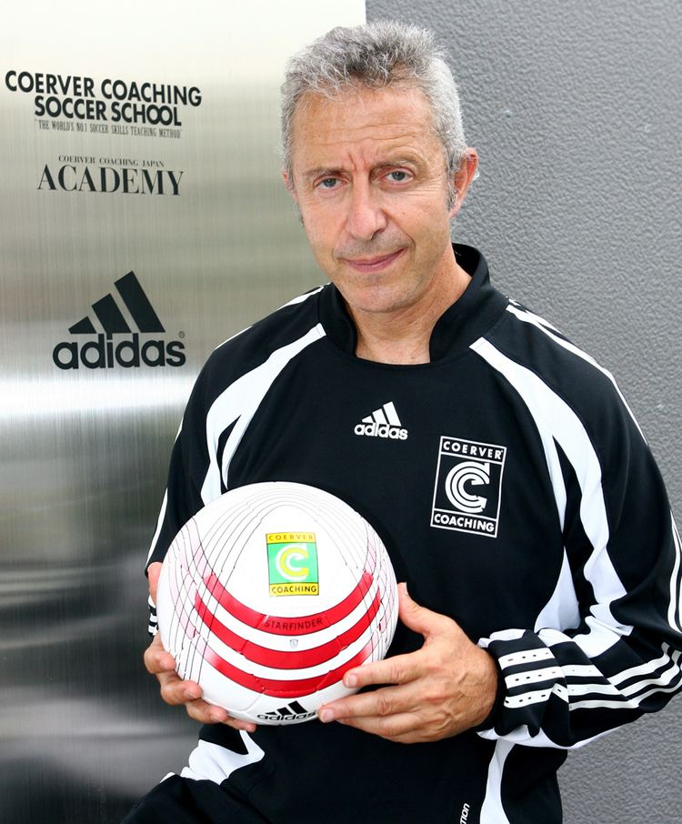
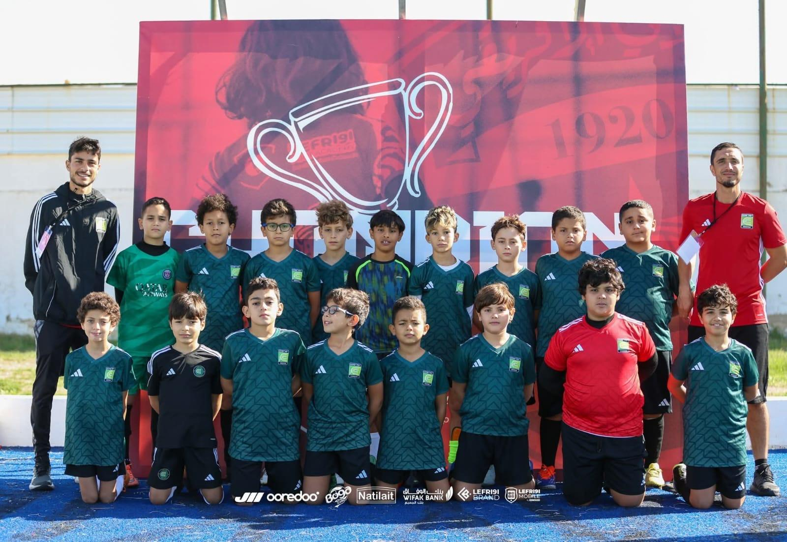

LA METHODE
COERVER®
La methode d'enseignement du football N°1 au monde.
Aujourd'hui en Tunisie.
NE D'UNE VISION
REVOLUTIONNAIRE
Tout commence avec Wiel Coerver, entraineur neerlandais de legende, qui revolutionne la pensee footballistique dans les annees 1970. Sa conviction : chaque joueur, quel que soit son talent naturel, peut devenir techniquement excellent avec la bonne methode d'enseignement.
En 1984, Alfred Galustian (ancien joueur de Wimbledon) et Charlie Cooke (legende de Chelsea) s'inspirent de la vision de Wiel Coerver pour fonder Coerver® Coaching — un programme complet d'education footballistique base sur le developpement de la technique individuelle au service du jeu collectif.
Aujourd'hui, pres de 41 ans plus tard, la methode est implantee dans plus de 50 pays, soutenue par la FIFA, l'UEFA et Adidas, et a forme plus d'un million de joueurs a travers le monde.

Il faut d'abord rendre un individu techniquement parfait avant qu'il puisse exceller collectivement.
LE POURQUOI, LE COMMENT, LE QUOI
L'amour du jeu
avant tout
Notre objectif est d'encourager l'amour du football habile chez les joueurs, les entraineurs et les parents. Nous croyons que toute amelioration commence par une passion sincere pour le jeu. Un enfant qui aime le ballon apprend deux fois plus vite.
Science et
progression graduee
Notre curriculum revolutionnaire, soutenu par la science du mouvement et du developpement de l'enfant, a change la facon dont le jeu est enseigne dans le monde entier. Chaque exercice augmente progressivement la pression jusqu'a atteindre la vitesse du match reel.
Transformation
technique et humaine
Vos joueurs et entraineurs transformeront leurs competences en utilisant la methode Coerver® dans nos academies et stages. Coerver® developpe le joueur, mais aussi la personne — confiance, discipline et creativite acquises sur le terrain.
LA PYRAMIDE DE
DEVELOPPEMENT DU JOUEUR
Le systeme Coerver® est structure autour de la Pyramide de Developpement du Joueur — 6 niveaux interconnectes qui guident chaque joueur de ses premiers pas avec le ballon jusqu'a la maitrise complete du jeu.
La base absolue de tout joueur Coerver®. Sans maitrise du ballon, rien n'est possible. Exercices individuels en repetition avec les deux pieds — toucher, controle, jonglerie, conduite. Le joueur doit sentir le ballon comme une extension naturelle de son corps. Plus un joueur maitrise le ballon tot, plus sa progression sera rapide et durable.
Un premier contact parfait est l'une des competences les plus valorisees dans le football moderne. Ce niveau developpe la capacite du joueur a recevoir le ballon dans n'importe quelle situation et a le redistribuer avec precision, vitesse et creativite — les deux pieds, de la tete, en mouvement.
Le coeur de l'identite Coerver®. La Pyramide des Moves classifie 43 gestes techniques individuels — crochets, feintes, changements de direction, stops and starts — pour battre un adversaire et creer de l'espace. Chaque joueur apprend a aller au duel avec confiance, en attaque comme en defense.
La vitesse dans le football moderne n'est pas seulement physique — c'est aussi la vitesse de decision. Ce niveau developpe l'agilite, la vivacite et la force avec et sans ballon, ainsi que la capacite a executer les gestes techniques a pleine vitesse, sous pression, comme en match.
Marquer des buts est le but du football. Ce niveau developpe la technique et la confiance devant le but — tirs des deux pieds, de la tete, en mouvement, sous pression, de differentes distances et angles. La creativite et la prise de risque calculee sont encouragees pour developper des finisseurs naturels.
Le sommet de la pyramide integre toutes les competences individuelles dans des situations de jeu reelles. Rondos, jeux en petits groupes, contre-attaques rapides, combinaisons — les joueurs apprennent a prendre les bonnes decisions sous haute pression, a combiner avec leurs coequipiers et a dominer collectivement.
LES 5S — L'ADN DE
CHAQUE SEANCE
Chaque session Coerver® Tunisie integre les 5 qualites fondamentales du Code Coerver® — un cadre garantissant que chaque joueur progresse sur tous les aspects du jeu, a chaque entrainement.
Maitrise technique individuelle poussee — la base de tout le systeme.
Vitesse physique et mentale — executer vite, decider vite, agir vite.
Force physique et mentale — resister a la pression, garder le ballon.
Mentalite, passion et amour du jeu — l'etat d'esprit du champion.
Intelligence du jeu et prise de decision — lire le jeu, anticiper.

LA METHODE MONDIALE
ADAPTEE A NOTRE TERRAIN
Coerver® Coaching Tunisie applique l'integralite du curriculum international officiel, adapte aux specificites du contexte tunisien. Nos coachs, certifies par Coerver® International, maitrisent chaque niveau de la pyramide et les transmettent avec passion.
Plus de 150 enfants font aujourd'hui confiance a notre academie. Leur progression est visible, mesurable et reelle — et la demande ne cesse de croitre. Le football tunisien a soif de methode, de rigueur et d'excellence. Nous y repondons.
Chaque seance suit le programme officiel valide par Coerver® International.
Notre equipe est formee et certifiee selon les standards Coerver® internationaux.
Chaque enfant evolue dans un groupe adapte a son age et a ses capacites reelles.
Coerver® Tunisie est un programme technique independant — compatible avec tout club.
ENSEIGNEE DANS
LES PLUS GRANDS CLUBS
La methode Coerver® n'est pas reservee aux academies locales. Elle est appliquee et recommandee par les plus grandes institutions du football mondial.